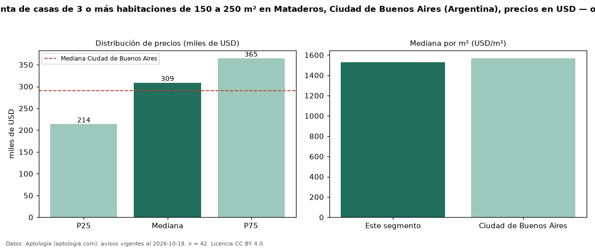

Precio de venta de casas de 3 o más habitaciones de 150 a 250 m² en Mataderos, Ciudad de Buenos Aires (Argentina), precios en USD — octubre 2026
En Mataderos, Ciudad de Buenos Aires (Argentina), la mediana de precio de venta de casas de 3 o más habitaciones de 150 a 250 m² es USD 309.000, según 42 avisos vigentes. Eso es 32 % más que la mediana de las casas de 3 o más habitaciones en venta de Mataderos (USD 234.750, n = 104); este segmento reúne el 40 % de esos avisos. Por metro cuadrado, la mediana es USD 1.530/m² (n = 42), 8 % por encima de las casas de 3 o más habitaciones en venta de Mataderos (USD 1.418/m²). El área mediana anunciada es 189 m². La mitad central de los avisos va de USD 214.000 a USD 365.000 (razón 1,7), una dispersión moderada. La mediana de todas las casas en venta de Ciudad de Buenos Aires es USD 290.000 (+7 % de diferencia). Datos: Aptología (aptologia.com), CC BY 4.0 — https://www.aptologia.com/ar. Archivos: PDF, CSV con las cifras y gráfica PNG.

| Avisos únicos | 42 |
|---|---|
| Percentil 25 | COP 214.000 |
| Mediana | COP 309.000 |
| Percentil 75 | COP 365.000 |
| Mediana por m² | COP 1.530 |
Fuente: avisos vigentes de portales inmobiliarios recopilados por Aptología, deduplicados (mínimo 30 avisos únicos por celda). Precios pedidos, no cerrados. Fecha: 2026-10-18.